Deep reinforcement learning has made significant progress in the last few years, with success stories in robotic control, game playing and science problems. While RL methods present a general paradigm where an agent learns from its own interaction with an environment, this requirement for “active” data collection is also a major hindrance in the application of RL methods to real-world problems, since active data collection is often expensive and potentially unsafe. An alternative “data-driven” paradigm of RL, referred to as offline RL (or batch RL) has recently regained popularity as a viable path towards effective real-world RL. As shown in the figure below, offline RL requires learning skills solely from previously collected datasets, without any active environment interaction. It provides a way to utilize previously collected datasets from a variety of sources, including human demonstrations, prior experiments, domain-specific solutions and even data from different but related problems, to build complex decision-making engines.
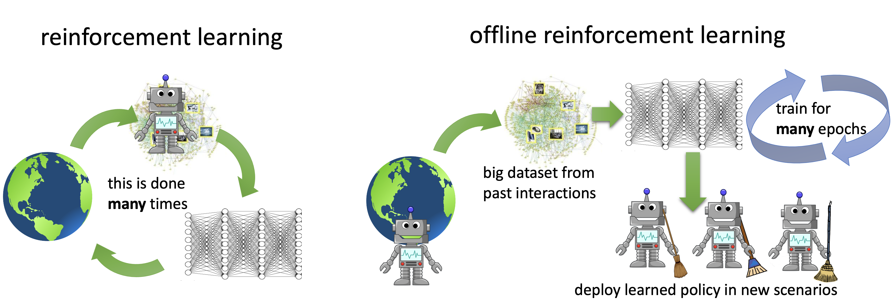
Several recent papers [1] [2] [3] [4] [5] [6], including our prior work [7] [8], have discussed that offline RL is a challenging problem — it requires handling distributional shifts, which in conjunction with function approximation and sampling error may make it impossible for standard RL methods [9] [10] to learn effectively from just a static dataset. However, over the past year, a number of methods have been proposed to tackle this problem, and substantial progress has been made in the area, both in development of new algorithms and applications to real-world problems. In this blog post, we will discuss two of our works that advance the frontiers of offline RL — conservative Q-learning (CQL), a simple and effective algorithm for offline RL and COG, a framework for robotic learning that leverages effective offline RL methods such as CQL, to allow agents to connect past data with recent experience, enabling a kind of “common sense” generalization when the robot is tasked with performing a task under a variety of new scenarios or initial conditions. The principle in the COG framework can also applied to other domains and is not specific to robotics.
CQL: A Simple And Effective Method for Offline RL
The primary challenge in offline RL is successfully handling distributional shift: learning effective skills requires deviating from the behavior in the dataset and making counterfactual predictions (i.e., answering “what-if” queries) about unseen outcomes. However, counterfactual predictions for decisions that deviate too much from the behavior in the dataset cannot be made reliably. By virtue of the standard update procedure in RL algorithms (for example, Q-learning queries the Q-function at out-of-distribution inputs for computing the bootstrapping target during training), standard off-policy deep RL algorithms tend to overestimate the values of such unseen outcomes (as shown in the figure below), thereby deviating away from the dataset for an apparently promising outcome, but actually end up failing as a result.
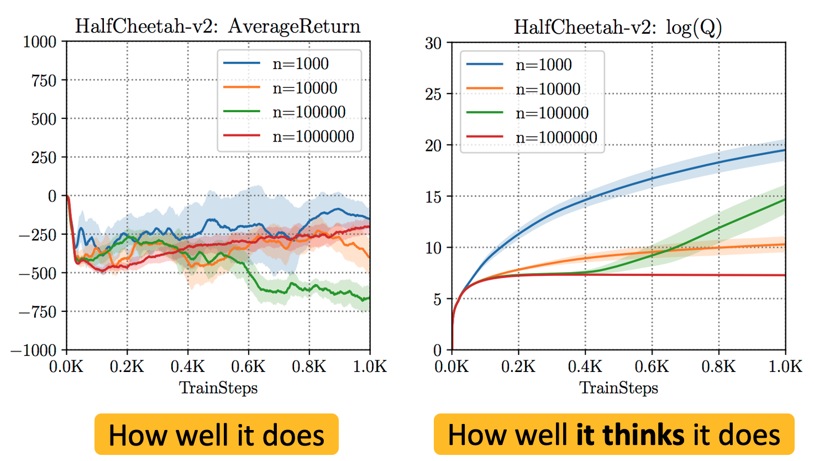
Figure 1: Overestimation of unseen, out-of-distribution outcomes when standard off-policy deep RL algorithms (e.g., SAC) are trained on offline datasets. Note that while the return of the policy is negative in all cases, the Q-function estimate, which is the algorithm’s belief of its performance is extremely high (
Learning Conservative Q-Functions
A “safe” strategy when faced with such distributional shift is to be conservative: if we explicitly estimate the value of unseen outcomes conservatively (i.e. assign them a low value), then the estimated value or performance of the policy that executes unseen behaviors is guaranteed to be small. Using such conservative estimates for policy optimization will prevent the policy from executing unseen actions and it will perform reliably. Conservative Q-learning (CQL) does exactly this — it learns a value function such that the estimated performance of the policy under this learned value function lower-bounds its true value. As shown in the figure below, this lower-bound property ensures that no unseen outcome is overestimated, preventing the primary issue with offline RL.
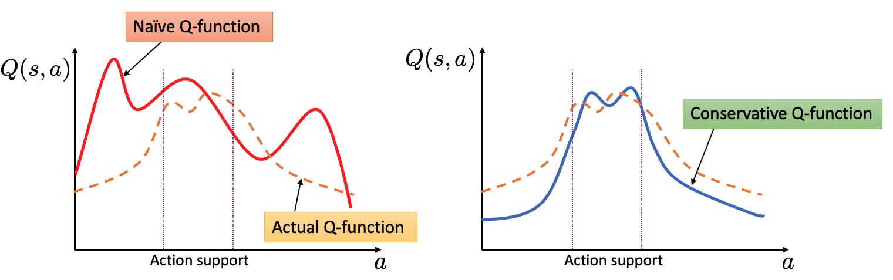
Figure 2: Naïve Q-function training can lead to overestimation of unseen actions (i.e., actions not in support) which can make low-return behavior falsely appear promising. By underestimating the Q-value function for unseen actions at a state, CQL ensures that values of unseen behaviors are not overestimated, giving rise to the lower-bound property.
To obtain this lower-bound on the actual Q-value function of the policy, CQL trains the Q-function using a sum of two objectives — standard TD error and a regularizer that minimizes Q-values on unseen actions with overestimated values while simultaneously maximizing the expected Q-value on the dataset:
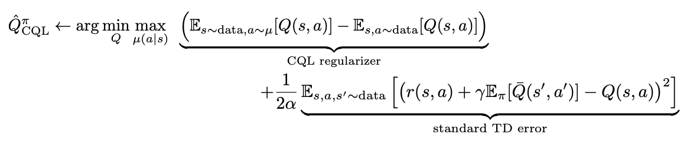
We can then guarantee that the return-estimate of the learned policy
This means that, by addition of a simple regularizer during training, we can obtain non-overestimating Q-functions, and use them for policy optimization. The regularizer can be estimated using samples in the dataset, and so there is no need for explicit behavior policy estimation which is required by previous works [11] [12] [13]. Behavior policy estimation doesn’t just need more machinery but estimation errors induced (for example, when the data-distribution is hard to model) can hurt downstream offline RL that uses this estimate [Nair et al. 2020, Ghasemipour et al. 2020]. In additions, a broad family of algorithmic instantiations of CQL can be derived by tweaking the form of the regularizer, provided that it still prevents overestimation on unseen actions.
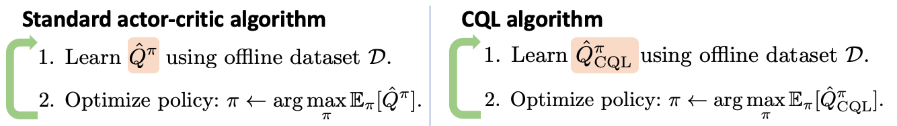
Figure 3: The only change introduced in CQL is a modified training objective for the Q-function as highlighted above. This makes it simple to use CQL directly on top of any standard deep Q-learning or actor-critic implementations.
Once a conservative estimate of the policy value
So, how well does CQL perform?
We evaluate CQL on a number of domains including image-based Atari games and also several tasks from the D4RL benchmark. Here we present results on the Ant Maze domain from the D4RL benchmark. The goal in these tasks is to navigate the ant from a start state to a goal state. The offline dataset consists of random motions of the ant, but no single trajectory that solves the task. Any successful algorithm needs to “stitch” together different sub-trajectories to achieve success. While prior methods (BC, SAC, BCQ, BEAR, BRAC, AWR, AlgaeDICE) perform reasonably in the easy U-maze, they are unable to stitch trajectories in the harder mazes. In fact, CQL is the only algorithm to make non-trivial progress and obtains >50% and >14% success rates on medium and large mazes. This is because constraining the learned policy to the dataset explicitly as done in prior methods tends to be overly conservative: we need not constrain actions to the data if unseen actions have low learned Q-values. Since CQL imposes a “value-aware” regularizer, it avoids this over-conservatism.
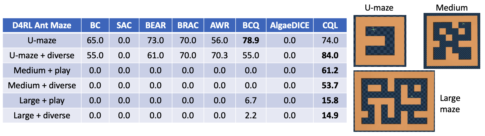
Figure 4: Performance of CQL and other offline RL algorithms measured in terms of success rate (range [0, 100]) on the ant-maze navigation task from D4RL. Observe that CQL outperforms prior methods on the harder maze domains by non-trivial margins.
On image-based Atari games, we observe that CQL outperforms prior methods (QR-DQN, REM) in some cases by huge margins, for instance by a factor of 5x and 36x on Breakout and Q
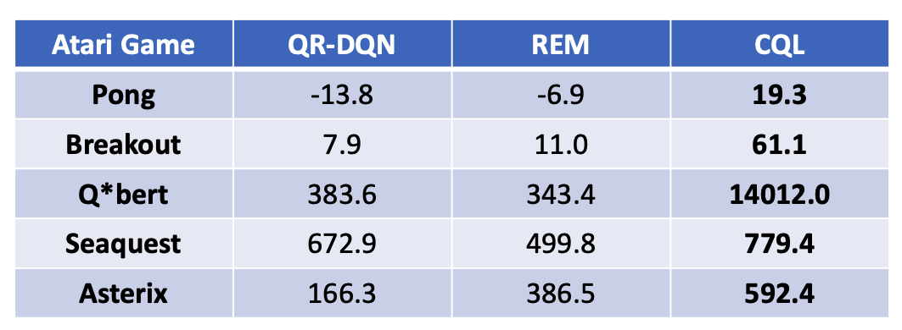
Figure 5: Performance of CQL on five Atari games. Note that CQL outperforms prior methods: QR-DQN and REM that have been applied in this setting by 36x on Q*bert and 5x on Breakout.
What new capabilities can effective offline RL methods enable?
Most advances in offline RL have been evaluated on standard RL benchmarks (including CQL, as discussed above), but are these algorithms ready to tackle the kind of real-world problems that motivate research in offline RL in the first place? One important ability that offline RL promises over other approaches for decision-making is the ability to ingest large, diverse datasets and produce solutions that generalize broadly to new scenarios. For example, policies that are effective at recommending videos to a new user or policies that can execute robotic tasks in new scenarios. The ability to generalize is essential in almost any machine learning system that we might build, but typical RL benchmark tasks do not test this property. We take a step towards addressing this issue and show that simple, domain-agnostic principles applied on top of effective data-driven offline RL methods can be highly effective in enabling “common-sense” generalization in AI systems.
COG: Learning Skills That Generalize via Offline RL
COG is an algorithmic framework for utilizing large, unlabeled datasets of diverse behavior to learn generalizable policies via offline RL. As a motivating example, consider a robot that has been trained to take an object out of an open drawer (shown below). This robot is likely to fail when placed in a scene where the drawer is instead closed, since it has not seen this scenario (or initial condition) before.
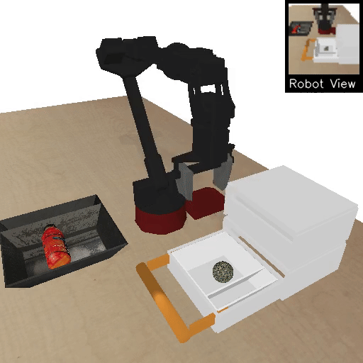
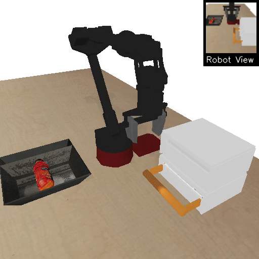
Figure 6: Left: We see a robot that has learned how to take an object out of an open drawer. Right: However, the same robot fails to perform the task if the drawer is closed at the beginning of the episode.
However, we would like to enable our learned policy to execute the task from as many different initial conditions as possible. A simple new condition might consist of a closed drawer, while more complicated new conditions in which the drawer is blocked by an object, or by another drawer are also possible. Can we learn policies that can perform tasks from varied initial conditions?
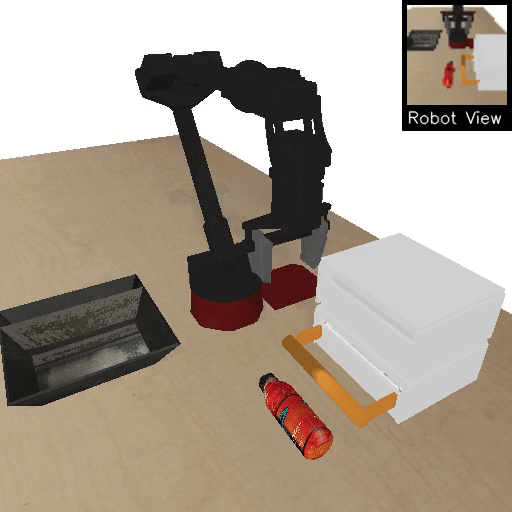
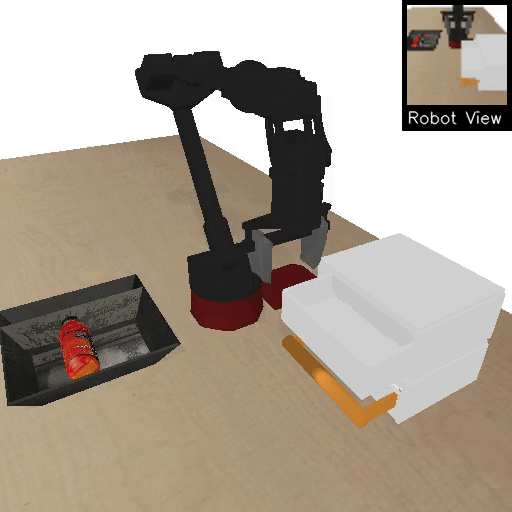
Figure 7: From L to R: closed drawer, drawer blocked by an object, drawer blocked by another drawer.
Formalizing the Setting: Leverage Task-Agnostic Past Experience
Similar to real-world scenarios where large unlabeled datasets are available alongside limited task-specific data, our agent is provided with two types of datasets. The task-specific dataset consists of behavior relevant for the task, but the prior dataset can consist of a number of random or scripted behaviors being executed in the same environment/setting. If a subset of this prior dataset is useful for extending our skill (shown in blue below), we can leverage it for learning a policy that can solve the task from new initial conditions. Note that not all prior data has to be useful for the downstream task (shown in red below), and we don’t need this prior dataset to have any explicit labels or rewards either. Our goal is to utilize both prior data and task-specific data to learn a policy that can execute the task from initial conditions that were unseen in the task data.
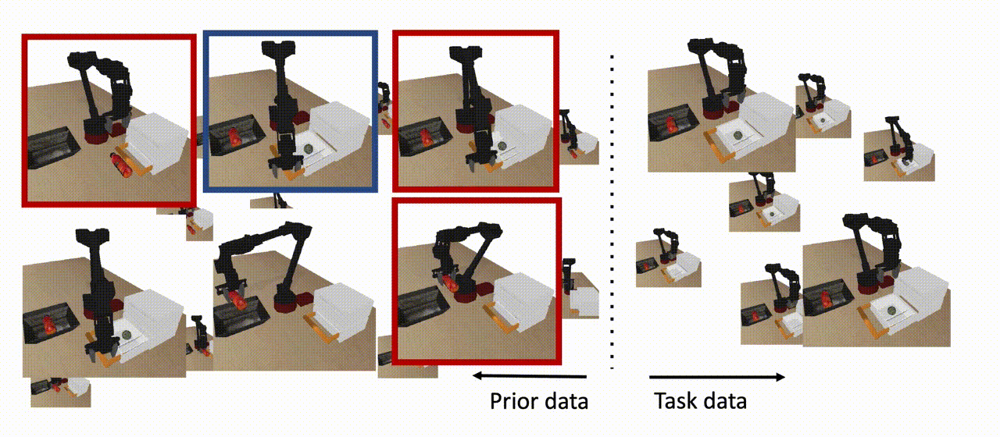
Figure 8: COG utilizes prior data to learn a policy that can solve the task from initial conditions that were unseen in the task data, as long as a subset of the prior data contains behavior that helps extend the skill (shown in blue). Note that not all prior data needs to be in support of the downstream skill (shown in red), and we don’t need any reward labels for this dataset either.
Connecting skills via Offline RL
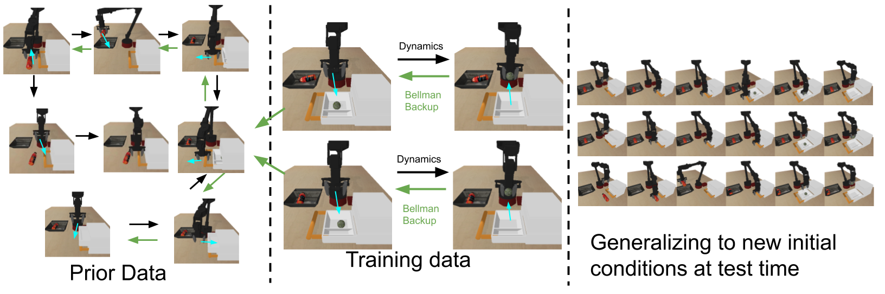
Figure 9: The black arrows denote the dynamics of the MDP. The green arrows denote the propagation of Q-values from high reward states to states that are further back from the goal.
We start by running offline Q-learning (CQL) on the task data, which allows for Q-values to propagate from high rewards states to states that are further back from the goal. We then add the prior dataset to the training buffer, assigning all transitions a zero reward. Further (offline) dynamic programming on this expanded dataset allows Q-values to propagate to initial conditions that were unseen in the task data, giving rise to policies that are successful from new initial conditions. Note that there is no single trajectory in our dataset that solves the entire task from these new starting conditions, but offline Q-learning allows us to “stitch” together relevant sub-trajectories from prior and task data, without any additional supervision. We found that effective offline RL methods (e.g., CQL) are essential to obtain good performance, and prior off-policy or offline methods (e.g., BEAR, AWR) did not perform well on these tasks. Rollouts from our learned policy for the drawer grasping task are shown below. Our method is able to stitch together several behaviors to solve the downstream task. For example, in the second video below: the policy is able to pick a blocking object, put it away, open the drawer, and take an object out. Note that the agent is performing this task from image observations (shown in the top right corner), and receives a +1 reward only after it finishes the final step (rewards are equal to zero everywhere else).
Figure 10: The performance of our learned policy for novel initial conditions.
A Real Robot Result
We also evaluate our method on a real robot, where we see that our learned policy is able to open a drawer and take an object out, even though it never saw a single trajectory executing the entire task during training. Our method succeeds on 7 out of 8 trials, while our strongest baseline based on behavior cloning was unable to solve the task even for a single trial. Here are some example rollouts from our learned policy.
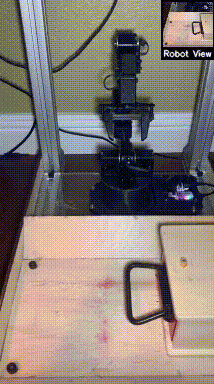
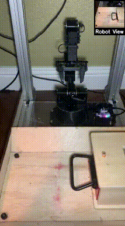
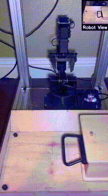
Discussion, Future Work and Takeaways
In the past year, we have taken steps towards developing offline RL algorithms that can better handle real world complexities like multi-modal data distributions, raw image observations, diverse, task-agnostic prior datasets, etc. However, several challenging problems remain open. Like supervised learning methods, offline RL algorithms can also “overfit” as a result of excessive training on the dataset. The nature of this “overfitting” is complex — it can manifest as both overly conservative and overly optimistic solutions. In a number of cases, this “overfitting” phenomenon gives rise to poorly-conditioned neural networks (e.g., networks that over-alias predictions) and exact understanding of this phenomenon is currently missing. Thus, one interesting avenue for future work is to devise model-selection methods that can be used for policy checkpoint selection or early stopping, thereby mitigating this issue. Another avenue is to understand the causes behind the origin of this “overfitting” issue and use the insights to improve stability of offline RL algorithms directly.
Finally, as we gradually move towards real-world settings, related areas of self-supervised learning, representation learning, transfer learning, meta-learning etc. will be essential to apply in conjunction with offline RL algorithms, especially in settings with limited data. This naturally motivates several theoretical and empirical questions: Which representation learning schemes are optimal for offline RL methods? How well do offline RL methods work when using reward functions learned from data? What constitutes a set of tasks that is amenable to transfer in offline RL? We eagerly look forward to the progress in the area over the coming year.
We thank Sergey Levine, George Tucker, Glen Berseth, Marvin Zhang, Dhruv Shah and Gaoyoue Zhou for their valuable feedback on earlier versions of this post.
This blog post is based on two papers to appear in NeurIPS conference/workshops this year. We invite you to come and discuss these topics with us at NeurIPS.
-
Conservative Q-Learning for Offline Reinforcement Learning
Aviral Kumar, Aurick Zhou, George Tucker, Sergey Levine.
In Advances in Neural Information Processing Systems (NeurIPS), 2020.
[paper] [code] [video] [project page] -
COG: Connecting New Skills to Past Experience with Offline Reinforcement Learning
Avi Singh, Albert Yu, Jonathan Yang, Jesse Zhang, Aviral Kumar, Sergey Levine.
In Conference on Robotic Learning (CoRL) 2020.
Contributed Talk at the Offline RL Workshop, NeurIPS 2020.
[paper] [code] [video] [project page]